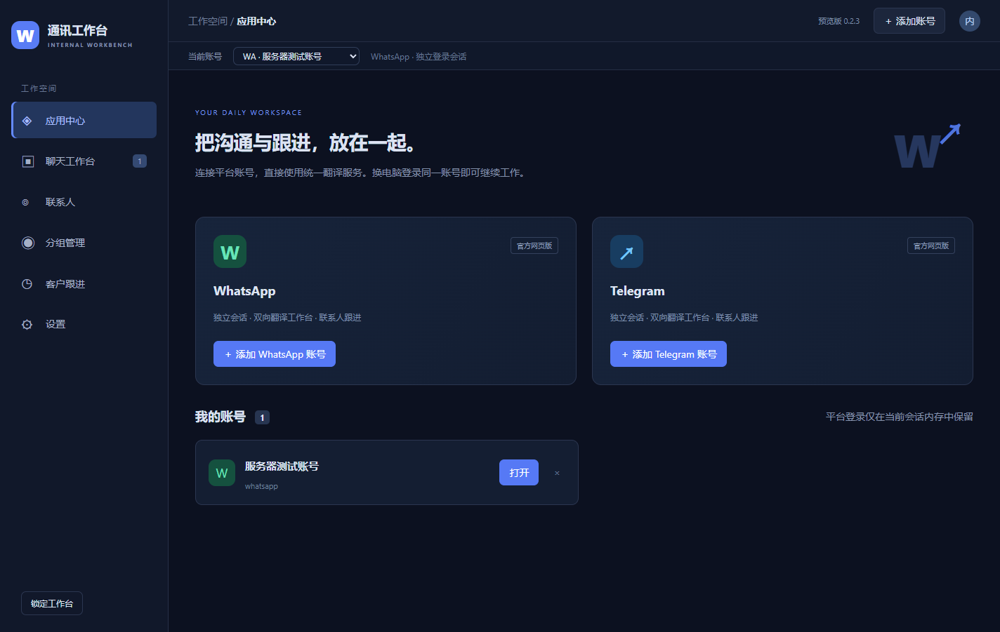

01 / TRANSLATE
说得自然，也看得明白。
ChatGPT 双向翻译，发出美式英语，接收中文。译文只使用逗号和句号，不设内部翻译额度或充值。
中文草稿你好，方便确认一下明天的安排吗？
↓ 美式英语 · 效果示意
翻译预览Hi, could you confirm the plans for tomorrow.
连接 WhatsApp 与 Telegram，用中文理解消息，
用自然的美式英语回应，把每一次沟通接续下去。

熟悉的平台，更连贯的工作流程
把翻译、记录和日常跟进放在顺手的位置。
ChatGPT 双向翻译，发出美式英语，接收中文。译文只使用逗号和句号，不设内部翻译额度或充值。
联系人、分组与跟进集中管理，记录每次沟通的后续事项，方便安排下一步工作。
业务数据保存在服务器。用内部账号和密码登录，无需原设备批准，不同内部账号的数据彼此隔离。
点击下载 Windows 版，运行安装包，按提示完成安装。
使用管理员分配的邮箱和密码。主管理员可创建下级管理员，由其开通普通成员。
在官方页面扫码登录 WhatsApp 或 Telegram。翻译由内部统一服务提供，无需配置密钥。
当前安装包尚未签名。请核对本页版本和文件校验值；如公司设备阻止安装，请联系内部管理员。
不需要。内部版本没有会员、积分、充值或翻译次数配额。翻译服务由管理员统一配置与维护，员工无需配置 API。
由内部管理员分配。主管理员可以创建下级管理员，下级管理员可为自己负责的普通成员开通账号并设置初始密码。网站不开放自助注册。
不需要，使用同一内部账号和密码即可读取自己的服务器业务数据。WhatsApp 和 Telegram 平台登录是独立流程，可能需要重新扫码。
预览版包含双平台工作台、翻译侧栏、音频文件转写、联系人、分组与客户跟进。聊天语音气泡自动翻译、媒体群发、完整引用/转发适配与深度统计仍在完善，当前并非完整功能等价正式版。
业务记录与配置仅保存到服务器，应用不建立本机业务数据库或持久登录凭据。运行期间需要内存，操作系统仍可能产生临时文件。离线时不能读取服务器记录。
通讯工作台 v0.2.3 · Windows x64 · 功能预览版